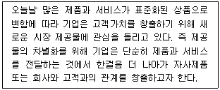
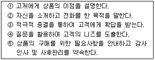
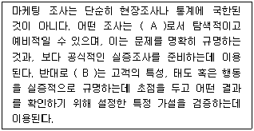
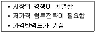
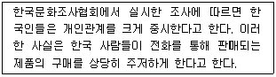
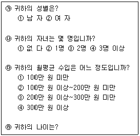
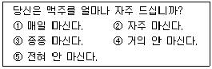
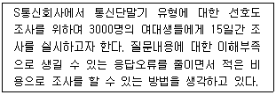
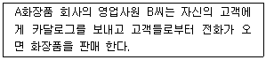
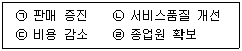

텔레마케팅관리사 (2013-06-02 기출문제)
1과목: 판매관리
1. 마케팅조사에 대한 설명으로 옳은 것은?
- 1차 자료는 특정 조사목적을 달성하기 위해 수집하는 정보이다.
- 전화조사는 표본의 범주를 통제하기가 어렵다.
- 일반적으로 마케팅조사를 수행하는 출발점은 1차 자료의 수집이다.
- 온라인조사는 비용이 많이 소요되나, 표본의 대표성을 확보할 수 있다는 장점이 있다.
(정답률: 81%)

2. 다음 중 가격결정에 있어서 상대적으로 고가가격이 적합한 경우가 아닌 것은?
- 수요의 탄력성이 높을 때
- 진입장벽이 높아 경쟁기업이 자사 제품의 가격만큼 낮추기 어려울 때
- 규모의 경제효과를 통한 이득이 미미할 때
- 높은 품질로 새로운 소비자층을 유인하고자 할 때
(정답률: 86%)
3. 소비자를 사회계층, 라이프스타일 또는 개성과 관련된 특징을 근거로 서로 다른 세분화시장으로 구분하는 것은?
- 인구통계학적 세분화(demographic segments)
- 지리적 세분화(geographic segments)
- 심리묘사적 세분화(psychographic segments)
- 비차별적 세분화(undifferentiated segments)
(정답률: 71%)
4. 잠재고객 접촉(approach)시에 적절한 행위가 아닌 것은?
- 잠재고객의 이름, 나이, 직업 등을 미리 알아둔다.
- 잠재고객이 제품을 구입할 능력이 있는지 알아본다.
- 잠재고객의 가족 관계에 대하여 사전 지식을 갖는다.
- 판매원의 시간을 절약할 수 있도록 방문시간은 판매원이 편리한 시간으로 정한다.
(정답률: 92%)
5. 코틀러(Kotler. P)가 말하는 제품의 4가지 수준에 해당하지 않는 것은?
- 핵심 제품(core product)
- 실제 제품(actual product)
- 확장 제품(augmented product)
- 소비 제품(consuming product)
(정답률: 55%)
6. 아웃바운드 텔레마케팅을 활용하는 마케팅전략이라고 볼 수 없는 것은?
- 매스마케팅
- 다이렉트마케팅
- 데이터베이스마케팅
- 1 대 1 마케팅
(정답률: 85%)
7. 기업의 고객가치 향상을 위한 경영전략 관점에서의 지식관리에 해당하지 않는 것은?
- 데이터웨어하우스
- 데이터마이닝
- 전자상거래
- 데이터베이스마케팅
(정답률: 89%)
8. 다음 중 전통적인 마케팅 믹스의 4가지 요소에 포함하지 않는 것은?
- 제 품(Product)
- 가 격(Price)
- 생산성(Productivity)
- 촉 진(Promotion)
(정답률: 92%)
9. 기존고객을 대상으로 하는 데이터베이스 마케팅 전략으로 거리가 가장 먼 것은?
- 고객 재활성화 전략
- 고객 애호도 제고 전략
- 고객유지전략
- 교차판매전략
(정답률: 52%)
10. 기업이 시장에서 재포지셔닝을 필요로 하는 상황이 아닌 것은?
- 경쟁자의 진입에도 차별적 우위를 지키고 있는 경우
- 이상적인 위치를 달성하고자 했으나 실패한 경우
- 시장에서 바람직하지 않은 위치를 가지고 있는 경우
- 유망한 새로운 시장 적소나 기회가 발견되었을 경우
(정답률: 80%)
11. 다음은 어떤 관점에서 고객과의 관계 창출을 설명하고 있는가?

- 필수품(Commodities)
- 가 치(Value)
- 사회적 책임(Social responsibility)
- 고객 경험(Customer experience)
(정답률: 44%)
12. 아웃바운드 텔레마케팅 상품판매의 상담 순서로 바르게 나열한 것은?

- ② → ④ → ① → ③ → ⑤
- ② → ① → ④ → ③ → ⑤
- ② → ③ → ④ → ① → ⑤
- ② → ① → ③ → ④ → ⑤
(정답률: 76%)
13. 다음 ( )안에 알맞은 용어는?

- A : 정성적 조사, B : 정량적 조사
- A : 정량적 조사, B : 정성적 조사
- A : 실증적 조사, B : 정량적 조사
- A : 정성적 조사, B : 실증적 조사
(정답률: 52%)
14. 마케팅 믹스 중 기업이 소비자, 중간 구매자 또는 기타 이해관계가 있는 대중에게 제품또는 기업에 관해서 정보를 전달하는 기능은?
- 제품기능
- 가격기능
- 유통기능
- 촉진기능
(정답률: 67%)
15. 소비자 조사를 통해서 고객을 평가하는 항목으로 거리가 가장 먼 것은?
- 최근 구매일자
- 구매품목
- 구매빈도
- 구매금액
(정답률: 59%)
16. 마케팅 전략의 주체가 되는 3C에 해당되지 않는 것은?
- Converter
- Customer
- Company
- Competitor
(정답률: 82%)
17. 대중마케팅과 데이터베이스마케팅의 비교설명으로 옳은 것은?
- 대중마케팅은 고객을 개별적으로 대우하고 데이터베이스마케팅은 고객을 동일한 집단으로 대우한다.
- 대중마케팅은 정량적 측정을 통한 지속적인 개선을 하고 데이터베이스마케팅은 정성적 측정 및 일회성 실행을 한다.
- 대중마케팅은 쌍방적이고 고객과의 관계를 근간으로 하고 데이터베이스마케팅은 일회적인 거래를 근간으로 한다.
- 대중마케팅은 고객의 수를 극대화하는 판매 중심적이고 데이터베이스마케팅은 고객의 생애가치를 극대화 한다.
(정답률: 75%)
18. 다음 중 아웃바운드 텔레마케팅 전용상품의 요건과 가장 거리가 먼 것은?
- 법적, 제도적인 요인
- 접촉대상 고려
- 판매상품에 대한 특성
- 구체적인 전략과 차별화
(정답률: 80%)
19. . 제품이나 프로그램의 수명주기를 연장시키기 위한 전략 중 새롭게 수정 혹은 개발된 프로그램으로 새로운 시장에 진출하는 것은?
- 시장침투
- 프로그램개발
- 시장개발
- 프로그램 다각화
(정답률: 56%)
20. 아웃바운드 텔레마케팅에 해당하지 않는 것은?
- 통신사에서 우수고객 관리를 위해 전화를 걸어 부가서비스 안내를 한다.
- 쇼핑몰에서 상품발송 후 배송이 잘 되었는지 확인전화를 한다.
- 보험사에서 가망고객에게 전화로 보험 상품 판매를 시도한다.
- 카드사에서 고객으로부터 걸려온 전화로 결제금액을 안내한다.
(정답률: 90%)
21. 다음이 설명하고 있는 제품수명 주기 단계는?

- 도입기
- 성장기
- 성숙기
- 쇠퇴기
(정답률: 71%)
22. 데이터베이스마케팅 활성화의 요인으로 가장 알맞은 것은?
- 시장의 탈대중화 현상
- 네트워크 TV 광고효율성의 증가
- 유통경로의 단일화
- 서비스 업종에 대한 정부규제 강화
(정답률: 41%)
23. 소비자의 구매 과정에서 욕구 발생에 영향을 주는 내적변수가 아닌 것은?
- 소비자의 동기
- 소비자의 특성
- 소비자의 과거 경험
- 과거의 마케팅 자극
(정답률: 82%)
24. 의사결정지원 시스템에 대한 설명으로 틀린 것은?
- 입력된 자료들의 정확성은 의사결정지원 시스템이 지원하는 의사결정에 크게 영향을 미칠 수 있다.
- 의사결정의 효율성(efficiency)이 아니라 효과성(effectiveness)을 높이기 위해서 사용해야 한다.
- 시스템을 통해 경영자를 대신하여 의사결정을 할 수 있다.
- 관리자가 의사결정이 필요한 상황에서 유용하게 사용된다.
(정답률: 59%)
25. 가맹점 입장에서의 프랜차이징 유통전략의 장점이 아닌 것은?
- 사업 실패 위험을 줄일 수 있다.
- 광고 및 운영상 전문가의 노하우를 전수받을 수 있다.
- 성공적으로 구축된 브랜드명과 사업계획 활용이 가능하다.
- 나만의 제품 품질의 차별화를 추구할 수 있다.
(정답률: 93%)
2과목: 시장조사
26. 불포함오류에 관한 설명으로 가장 적합한 것은?
- 표본조사시 표본체계가 완전하지 않아서 생기는 오류
- 표본추출과정에서 선정된 표본 중에서 응답을 얻어내지 못하여 생기는 오류
- 면접이나 관찰과정에서 응답자나 조사자 자체의 특성에서 생기는 오류
- 정확한 응답이나 행동을 한 결과를 조사자가 잘못 기록하거나, 기록된 설문지나 면접지가 분석을 위하여 처리되는 과정에서 틀려지는 오류
(정답률: 62%)
27. 합리적 의사결정을 위해 유용한 정보를 획득할 목적으로 시장조사를 실시할 때, 다음 중 가장 신뢰할 수 있는 지식획득 방법은?
- 과학적방법
- 직관적방법
- 권위적방법
- 집착적방법
(정답률: 77%)
28. 전화면접자의 기본자세가 아닌 것은?
- 정확한 단어와 정돈된 말투를 사용한다.
- 한 질문에 두 가지 이상의 내용을 포함하지 않는다.
- 정보파악을 위해 매우 세밀하고 자세히 질문한다.
- 부정이나 긍정을 유도하는 질문은 하지 않는다.
(정답률: 76%)
29. 어떤 연구에서“65세 이상의 노년층 인구가 많은 도시가 65세 이상의 노년층 인구가 적은 도시보다 1인당 여가활동에 지출하는 액수가 많다.”는 결과를 얻었을 때, 이러한 연구결과로부터“어떤 67세의 노인이 63세의 노인보다 여가활동에 더 많은 비용을 지출한다.”고 결론을 내리는 경우에 발생하는 오류를 무엇이라고 하는가?
- 조건화 오류
- 생태학적 오류
- 개인주의적 오류
- 일반화 오류
(정답률: 42%)
30. 측정에 관한 설명으로 틀린 것은?
- 어떤 변수의 개념을 설명할 때 다른 개념을 사용해서 설명하는 것이 변수의 개념적 정의이다.
- 정확하고 측정 가능한 용어로 설명하는 것이 조작적 정의이다.
- 조작적 정의는 조사자의 판단과 마케팅 관리자의 정보요구에 따라 달라지지 않는다.
- 측정은 조작적 정의에 따라 사전에 정해진 일정한 규칙에 의해 체계적으로 숫자를 부여하는 행위이다.
(정답률: 69%)
31. 설문지 작성의 기본원칙으로 적절하지 않은 것은?
- 목적에 적합한 설문 문항 수
- 어렵고 까다로운 설문지 구성
- 목적에 의한 분류
- 설문의 효율성
(정답률: 86%)
32. 다음 중 시장 조사를 위한 자료 수집 중 1차 자료의 예로 옳지 않은 것은?
- 일반 소비자나 유통점 주인들을 대상으로 한 서베이
- 고객 행동에 대한 관찰
- 실험실 조사에서의 소비자 반응 측정
- 대학 연구소의 일반 소비자 조사 자료
(정답률: 65%)
33. 텔레마케터를 활용해서 보험 상품을 판매하고자 하는 보험사에게 있어, 다음과 같은 정보가 주어졌다. 이 정보를 무엇이라 하는가?

- 내부 2차 자료
- 외부 2차 자료
- 내부자료
- 종속변수
(정답률: 77%)
34. 다음 중 설문지를 통해 자료를 수집하는 방법으로 조사상황에 따라 신속하게 질문방법, 절차, 순서, 내용 등을 바꿀 수 있는 자료수집 방법은?
- 개인면접법
- 전화조사방법
- 우편조사방법
- 인터넷조사방법
(정답률: 69%)
35. 다음 중 마케팅조사의 진행 과정으로 올바른 것은?
- 조사 계획 단계 → 자료수집 단계 → 예비 단계 → 분석 및 대안제시 단계
- 자료수집 단계 → 조사 계획 단계 → 분석 및 대안제시 단계 → 예비 단계
- 조사 계획 단계→ 자료수집 단계 → 분석 및 대안제시 단계 → 가설 제시 단계
- 예비 단계 → 조사 계획 단계 → 자료수집 단계 一분석 및 대안제시 단계
(정답률: 50%)
36. 전화번호부를 이용하여 확률 표본 추출시 가장 쉽게 적용할 수 있는 추출법은?
- 체계적 추출법(systematic sampling)
- 층화 추출법(stratified sampling)
- 지역 추출법(area sampling)
- 할당 추출법(quota sampling)
(정답률: 40%)
37. 다음 중 전화조사에서 무응답 오류의 의미로 옳은 것은?
- 데이터 분석에서 나타나는 오류
- 부적절한 질문으로 인하여 나타나는 오류
- 응답자의 거절이나 비접촉으로 나타나는 오류
- 조사와 관련 없는 응답자를 선정하여 나타나는 오류
(정답률: 84%)
38. 설문지의 문항을 조사자가 읽어주고 응답자의 대답을 기록하여 자료수집을 하는 기법이 아닌 것은?
- 전화조사
- 우편조사
- 면접조사
- 집단면접조사
(정답률: 79%)
39. 과학적 조사방법의 특성으로 틀린 것은?
- 과학적 조사방법을 통해 시장조사과정과 분석과정에서 오류를 최소화하도록 해야 한다.
- 과학적 조사방법은 개인적 경험, 직관, 감성을 근거로 자료를 수집하여 시장문제를 분석한다.
- 과학적 조사방법으로 시장의 문제점을 발견하고, 원인규명을 통하여 시장문제를 예측할 수 있다.
- 조사자는 시장문제를 구성하고 있는 요소들을 구분하고 그 상호관계를 분석함으로써 시장문제의 원인을 파악하고 해결방안을 모색한다.
(정답률: 88%)
40. 다음에 제시되어 있는 설문지 문항 중 잘못 작성된 것은?

- 20세 이하
- 20세 이상~30세 이하
- 30세 이상~40세 이하
- 40세 이상
(정답률: 45%)
41. 다음 중 자료처리를 위한 코딩에 어려운 문제점이 있는 질문 형식은?
- 다지선다형
- 양자택일형
- 대인면접법
- 자유응답형
(정답률: 80%)
42. 종속변수를 선행하면서 영향을 미치는 변수는?
- 잔여변수
- 외생변수
- 독립변수
- 통제변수
(정답률: 70%)
43. 시장조사시 자료 분석 절차에 해당하지 않는 것은?
- 편집(editing)
- 통제(control)
- 코딩(coding)
- 분석(analysis)
(정답률: 85%)
44. 측정에 있어 타당도와 신뢰도에 영향을 미치는 요인 중 개인적 요인과 거리가 먼 것은?
- 오 자
- 직 업
- 교육수준
- 연 령
(정답률: 71%)
45. 측정하고자 하는 개념이나 속성을 어느 정도로 정확하게 측정하였는가를 나타내는 타당성에 대한 설명과 거리가 먼 것은?
- 타당성은 동일한 측정을 위하여 항목간의 평균적인 관계에 근거하여 내적인 일관성을 구하는 알파계수법에 의하여 측정할 수 있다.
- 타당성의 종류에는 내용타당성, 기준에 의한 타당성, 구성타당성이 있다.
- 내용타당성은 측정도구를 구성하고 있는 항목들이 측정하고자 하는 내용을 어느 정도 충실하게 측정하고 있는지를 논리적으로 알아보는 것이다.
- 기준에 의한 타당성은 어느 측정도구의 타당성이 높다면 그 측정도구에 의하여 나타난 결과와 다른 기준 또는 변수간의 높은 상관관계가 나타나야 한다는 것이다.
(정답률: 54%)
46. 다음 설문 문항의 오류에 대한 설명으로 옳은 것은?

- 대답을 유도하는 질문을 하고 있다.
- 가능한 응답을 모두 제시하지 않고 있다.
- 응답항목들 간의 내용이 중복되고 있다.
- 하나의 항목으로 두 가지 내용을 질문하고 있다.
(정답률: 78%)
47. 시장조사시 문제파악 후 해결을 위한 체계를 모색하는 것으로 알맞지 않은 것은?
- 과거의 조사 및 연구결과 또는 선행문헌연구를 통해 당면과제의 해결방향을 모색한다.
- 해결해야 할 문제 자체를 중심적으로 분석해야 한다.
- 다른 소비자 또는 전문가의 의견을 수집·정리한다.
- 조사자 자신의 경험, 직관, 감성을 통하여 해결방안을 모색해 본다.
(정답률: 85%)
48. 다음 중 척도법의 선택으로 가장 적합한 것은?
- 성별을 분류하기 위해 서열척도를 선택했다.
- 상품의 무게를 알아보기 위해서 명목척도를 선택했다.
- 상품의 유형별 분류를 위해 비율척도를 선택했다.
- 지구온난화를 조사하기 위해 등간척도를 선택했다.
(정답률: 60%)
49. 다음 설명에 가장 적합한 조사유형은?

- 면접조사
- 방문조사
- 집단설문조사
- 관찰조사
(정답률: 73%)
50. 최소의 경비와 노력으로 광범위한 지역과 대상을 표본으로 삼을 수 있는 자료수집방법은?
- 면접조사법
- 관찰방법
- 우편조사법
- 전화조사법
(정답률: 68%)
3과목: 텔레마케팅관리
51. 콜센터 경영시 가장 큰 문제점인 이직률의 원인으로 틀린 것은?
- 관리자와의 커뮤니케이션 부조화
- 불확실한 비전 및 커리어패스(Career path)
- 일관되고 투명한 급여기준
- ‘끼리끼리’문화에 익숙한 상담원들의 집단행동
(정답률: 72%)
52. 텔레마케팅은 어떤 단어의 조합으로 만들어진 용어인가?
- Television + Marketing
- Telephone + Marketing
- Telecommunication + Marketing
- Tele-sale + Marketing
(정답률: 75%)
53. 텔레마케팅을 통한 판매 시 염두 해 두어야할 원칙 중에「80/20의 법칙」이란?
- 20%의 고객이 80%의 수익을 창출한다.
- 전화를 걸면 20%는 응답을 하고 80%는 거절을 한다.
- 통화가 이루어진 고객 중 20%는 구매를 하고 80%는 구매를 하지 않는다.
- 전체 판매용의 20%가 전화통화 비용의 80%를 차지한다.
(정답률: 63%)
54. 다음 중 직무설계에 관한 용어의 설명으로 틀린 것은?
- 직무설계(job design)는 직무에 관한 정보를 수집·분석하여 직무의 내용과 직무담당자의 자격요건을 체계화하는 것이다.
- 직무단순화(job simplification)는 직무담당자들이 좁은 범위의 몇 가지 일을 담당하도록 직무를 설계하는 방법이다.
- 직무순환(job rotation)은 작업자로 하여금 여러 가지 다양한 직무에 순환근무토록 하여 직무활동을 다각화하는 방법이다.
- 직무확대(job enlargement)는 직무수행자의 직무를 다양화하여 직무의 수평적 범위를 넓히는 것이다.
(정답률: 43%)
55. 조직 내의 직원의 직무만족은 심리적인 측면과 보상적인 측면으로 나눌 수 있는데 다음 중 심리적인 측면에 해당하는 것은?
- 임 금
- 승진기회
- 신 념
- 성과급
(정답률: 79%)
56. 통화품질과 텔레마케팅 모니터링의 차이점에 대해서 잘못 설명한 것은?
- 통화품질은 종합적인 평가체제이고, 텔레마케팅 모니터링은 상담원과 고객 간의 통화 자체에서 느껴지는 상담의 질 정도를 평가한다.
- 통화품질은 종합품질과 경쟁력을 동시에 평가하며, 텔레마케팅 모니터링은 콜센터 자체의 커뮤니케이션 능력의 정도를 평가한다.
- 통화품질의 궁극적 목적은 콜센터 경영의 질을 향상시키는 것이며, 텔레마케팅 모니터링은 상담원의 상담의 질을 향상시키는 것이다.
- 통화품질은 자체통화품질(CQ4) 담당에 의한 평가이며, 텔레마케팅 모니터링은 제3자인 외부전문기관에 의한 객관적인 평가관리가 이루어진다.
(정답률: 69%)
57. 인적자원의 가치를 체계적이고 합리적으로 측정하기 위한 측정지표에 대한 설명으로 틀린 것은?
- 인적자본 수익성지표 - 종업원 단위당 생산성
- 인적자본 경제적 부가가치지표 - 종업원 단위당 실제기업이익
- 인적자본 투자수익률지표 - 인적 자원에 대한 투자금
- 인적자본 시장가치지표 - 종업원 단위당 지적자산 크기
(정답률: 54%)
58. 다음 중 경력관리에 대한 설명으로 틀린 것은?
- 경력관리는 장기적인 계획이다.
- 적재적소, 후진양성에 필요하다.
- 능력주의와 연공주의를 절충한다.
- 조직의 목표와 개인의 목표를 일치시킨다.
(정답률: 73%)
59. 통화품질에 대한 설명으로 거리가 먼 것은?
- 통화품질이란 기업과 고객 간에 이루어지는 통화에서 느껴지는 품질의 정도를 말한다.
- 하드웨어적인 품질과 소프트웨어적인 품질로 구분할 수 있다.
- 콜센터의 통화에 대한 종합적인 품질의 정도를 말한다.
- 불만고객과의 의사소통 수단인 대고객 DM 활동이다.
(정답률: 76%)
60. 텔레마케터 전문 인력채용시 면접기준으로 부적절한 것은?
- 청취, 이해력
- 세일즈경력, 경제력
- 품성, 조직 적응력
- 음성표현, 구술능력
(정답률: 84%)
61. 모니터링 성공요소가 아닌 것은?
- 대표성
- 주관성
- 신뢰성
- 유용성
(정답률: 72%)
62. 아웃바운드 텔레마케팅 성과분석을 위한 지표 분석기준에 해당 되지 않는 것은?
- 포기콜율
- 콜 당 평균 전화비용
- 사용대비 고객획득율
- 콜 응답율
(정답률: 61%)
63. Erlang C 공식에 필요한 변수가 아닌 것은?
- 평균통화시간
- 예상 인입콜 수
- 지연 시간
- 목표 서비스 레벨
(정답률: 37%)
64. 개인 성과평가의 신뢰성과 공정성을 확보하기 위한 방법으로 틀린 것은?
- 다면평가를 효율적으로 활용한다.
- 평가자에 대한 평가체계, 평가기법 등의 종합적인 평가관련 교육을 강화한다.
- 평가결과는 비공개로 하고 평가자와 피평가자간의 면담을 통한 코칭을 활성화한다.
- 피평가자가 평가결과에 불만이 있는 경우 이의제기를 할 수 있는 소통채널을 운영한다.
(정답률: 81%)
65. 다음이 설명하고 있는 업무는 텔레마케팅 형태 중 어느 형태에 해당하는가?

- 인바운드, B to C
- 인바운드, B to B
- 아웃바운드, B to C
- 아웃바운드, B to B
(정답률: 70%)
66. 다음 중 콜센터 병리현상의 유형이 아닌 경우는?(문제 오류로 실제 시험에서는 모두 정답 처리 되었습니다. 여기서는 1번을 누르면 정답 처리 됩니다.)
- 과잉 감정 노출(Tamper Exposure)
- 콜센터 관료주의(Bureaucratism)
- 콜센터 바이탈 사인(Vital Signs)
- 상담 내향성(introversion)
(정답률: 90%)
67. 막스 베버(Max Weber)가 주장한 이상적인 관료조직(bureaucracy)의 특징을 올바르게 설명한 것은?
- 과업의 성과가 일정하도록 다양한 규칙이 있어야 한다.
- 경영자는 개인적인 방법과 생각으로 조직을 이끌어야 한다.
- 조직구성원의 채용과 승진은 경영자의 지식과 경험에 기초한다.
- 조직의 각 부서 관리는 해당 업무의 전문가에 의해 이루어져야 한다.
(정답률: 65%)
68. 아웃바운드 텔레마케팅의 성공 요인에 관한 설명으로 틀린 것은?
- 텔레마케팅의 성공 여부는 정확한 데이터와 리스트에 있다.
- 신입사원이나 무경험자가 텔레마케팅 실무경력자보다 유리하다.
- 대중매체와 결합했을 때 시너지효과를 얻는다.
- 콜 자동처리 시스템을 구축하는 사무환경이 아웃바운드 텔레마케팅 생산성을 향상시킨다.
(정답률: 80%)
69. 다음 중 텔레마케팅 용어와 그에 대한 설명이 옳은 것은?
- 평균통화시간 : 상담원의 통화 시간과 통화 마무리 시간을 합한 시간
- 평균통화처리시간 : 상담원이 고객과 통화한 평균 시간
- 1차통화처리율 : 고객이 콜 센터로 전화 했으나 모든 상담원이 상담 중인 관계로 사후에 고객과의 통화가 요구되는 콜의 비율
- 통화중평균대기 : 상담원의 업무 처리 과정 중 고객의 통화를 잠시 보류 시키는 시간
(정답률: 55%)
70. CTI의 주요 기능으로 적당하지 않은 것은?
- 자동착신호분배 및 녹취 기능
- 자료전송 및 음성사서함 기능
- 송신호에 대한 자동 정보제공 기능
- 자동 전화걸기 기능
(정답률: 36%)
71. 콜센터의 원활한 조직 관리를 위하여 슈퍼바이저가 관리하는 상담사의 수를 적정하게 재현해야 한다는 원칙은?
- 관리일원의 원칙
- 관리한계의 원칙
- 관리명확의 원칙
- 관리제한의 원칙
(정답률: 55%)
72. 인바운드 텔레마케팅과 아웃바운드 텔레마케팅을 구분하는 기준은?
- 마케팅의 소구대상
- 마케팅의 전개 장소
- 콜센터의 운영주체
- 전화를 거는 주체
(정답률: 76%)
73. 인바운드 텔레마케팅을 위해 활용되는 WFMS 시스템의 기능이 아닌 것은?
- 콜 수요 예측을 할 수 있다.
- 스케줄링에 필요한 정보를 제공한다.
- 콜센터 시스템 증설 예측기능을 갖고 있다.
- 상담사에게 업무별 특성에 맞도록 콜을 라우팅 하는 기능을 갖고 있다.
(정답률: 55%)
74. 다음 중 일반적인 교육·훈련 평가 순서를 바르게 나열한 것은?
- 반 응 → 학 습 → 행 동 → 결과수준
- 반 응 → 행 동 → 학 습 → 결과수준
- 학 습 → 반 응 → 행 동 → 결과수준
- 학 습 → 행 동 → 반 응 → 결과수준
(정답률: 35%)
75. 신입 상담원 교육과정으로 거리가 먼 것은?
- 업무지식
- 회사 전반적인 사항
- 커뮤니케이션 스킬
- 콜 분석 및 예측
(정답률: 70%)
4과목: 고객응대
76. 다음 중 언어적 메시지에 해당하지 않는 것은?
- 서 류
- 편 지
- 보고서
- 음 성
(정답률: 60%)
77. 커뮤니케이션 네트워크 중 구성원간의 상호작용이 집중되어 있지 않고 널리 분산되어 있는 유형으로 위원회 같은 조직에서 나타나며, 수평적 네트워크를 형성하는 것은?
- 사슬형
- 수레바퀴형
- Y형
- 원 형
(정답률: 50%)
78. 스크립트에 대한 적절한 설명이 아닌 것은?
- 잠재고객 또는 고객과 통화를 할 때 사용하는 대본과 같은 것으로써 고객과의 원활한 대화를 돕는다.
- 스크립트는 통화 목적과 방향 설정이 명확해야 하고 효과적인 통화시간을 관리할 수 있다.
- 다양한 고객을 접하게 됨에 따라 스크립트는 지속적인 보완을 해야 한다.
- 효과적인 통화를 위해 반드시 상담사는 스크립트에 명시되어 있는 대로 고객응대를 해야 한다.
(정답률: 92%)
79. 불만족 고객에 대한 상담기법으로 틀린 것은?
- 참을성 있게 공감적 경청을 한다.
- 항상 목소리를 높이며 소비자의 의견에 동조한다.
- 실현 가능한 문제해결 방법 중 최선을 다하고 있음을 전달한다.
- 문제해결이 만족스러웠는가를 확인한다.
(정답률: 80%)
80. B2B(Business to Business) CRM의 설명으로 틀린 것은?
- 기업 대 기업의 판매는 본질적으로 기업이 아닌 실체적인 개별 인간과의 거래이므로 실체적 인간이 바라는 요구에 대응하는 것이 B2B CRM의 핵심이다.
- B2B 고객과의 관계 관리는 기억의 특성을 고려한 가치 있는 해법을 찾는 것이 과제이다.
- B2B 프로그램의 경우 기업과 소비자 모두를 대상으로 하기 때문에 개별 소비자 프로그램에 비해 범위가 넓다.
- B2B CRM은 B2C(Business to Consumer) CRM에 비해서 고려해야 할 범위가 일반적으로 좁다고 할 수 있다.
(정답률: 75%)
81. 서비스 및 상품 구매 후 상담요령과 거리가 먼 것은?
- 상담의 문제점 및 잘못된 점을 파악한다.
- 서비스 가능성과 보상여부를 판단한다.
- 사후관리에 따른 스케줄링을 한다.
- 합리적인 구매의사 결정을 위해 정보를 제공한다.
(정답률: 72%)
82. 다음 중 소비자 피해보상의 일반원칙에 해당되지 않는 것은?
- 제품에 결함이 있으면 무조건 가격환불을 해주어야 한다.
- 구입 가격에 분쟁이 발생하면 기재한 가격을 제시한 자가 입증책임을 진다.
- 소비자에게 계약해제에 따른 손해발생시 사업자는 손해배상책임이 있다.
- 제품 하자에 따른 환불시 구입 가격을 기준으로 한다.
(정답률: 74%)
83. 고객응대에 대한 설명으로 옳지 않은 것은?
- 고객과 커뮤니케이션을 하는 활동이다.
- 고객이 필요로 하는 정보를 제공한다.
- 고객의 요구를 미리 판단하여 답을 제시한다.
- 고객응대시 고객의 입장에서 판단한다.
(정답률: 88%)
84. 고객의 유형 중 단호한 형(Decisive)의 고객상담 요령과 가장 거리가 먼 것은?
- 고객에게 상담원이 될 수 있으면 말을 많이 한다.
- 질문에 직접적인, 간결한, 사실적인 대답을 한다.
- 변명하지 말고 설명을 간결하게 하고 해결책을 제공한다.
- 상황의 해결을 목표로 한 구체적 질문을 하고 서비스한다.
(정답률: 88%)
85. 고객응대시 잘못된 응대와 그에 따른 효과적인 대응방법이 잘못 연결된 것은?
- 저는 모릅니다. → 제가 알아보겠습니다.
- 제 잘못이 아닙니다. → 저희 관리자와 상의하십시오.
- 다시 전화 주십시오. → 제가 다시 전화 드리겠습니다.
- 진정하세요. → 죄송합니다.
(정답률: 77%)
86. 고객과의 커뮤니케이션을 효율적으로 하기 위해 사용하는 화법과 가장 거리가 먼 것은?
- 고객의 발언을 인용한다.
- 결론과 요점을 먼저 전한다.
- 가급적 전문용어를 사용한다.
- 요점이 되는 전달 내용을 복창 확인한다.
(정답률: 80%)
87. 고객이 기업과 만나는 모든 장면에서의 결정적인 순간을 의미하며, 텔레마케팅에 널리 활용되는 개념은?
- MOT
- CRM
- CSP
- POCS
(정답률: 73%)
88. 커뮤니케이션에 대한 설명으로 틀린 것은?
- 의사소통으로 표현되지만 보다 넓은 의미이다.
- 특정대상에게 구체적인 정보나 감정을 전달하는 것이다.
- 욕구 충족을 위한 인간의 행동이다.
- 의사전달 → 감정이입 → 정보교환의 순으로 나타난다.
(정답률: 61%)
89. 고객지향마케팅에 대한 설명으로 옳은 것은?
- 상품의 시장 점유율을 중심으로 마케팅 전략을 수립한다.
- 상품의 특징 및 장점 등을 중심으로 마케팅 전략을 수립한다.
- 고객 서비스 중심으로만 마케팅 전략을 수립한다.
- 고객이 의사결정의 기준이 되고, 고객관점에서 마케팅 전략을 수립한다.
(정답률: 74%)
90. 커뮤니케이션의 기본요소에 대한 설명으로 옳지 않은 것은?
- 전달자(Communicator) : 전달의도가 커뮤니케이션의 시발점이 된다.
- 부호화(Encoding) : 상징물이나 신호 등에는 전달자의 의도가 하나의 부호로 실려 있게 되는데 눈으로 보이지 않는 체계이므로 전달자와 수신자간의 보다 깊은 심리적인 교감이 필요하다.
- 메시지 및 매체 : 전달자가 수신자에게 전하려는 내용이며, 부호화의 결과이고 커뮤니케이션의 경로이다.
- 해석 및 수신자(Decoding&Receiver) : 일방적인 커뮤니케이션에서는 전달하려는 내용과 수신자가 받아들이는 내용 사이에 왜곡의 가능성이 높다.
(정답률: 42%)
91. 다음 중 CRM을 통해 얻게 되는 기업측면의 직접적 이익에 해당하는 것을 모두 고르면?

- (ㄱ)
- (ㄱ), (ㄴ)
- (ㄷ), (ㄹ)
- (ㄱ), (ㄷ), (ㄹ)
(정답률: 43%)
92. 잘못된 서비스로 인하여 고객에게 사과를 해야 할 때 취할 자세와 가장 거리가 먼 것은?
- 고객의 기분을 인정하고, 책임을 공유할 것임을 표현한다.
- 고객에 대한 배려와 관심을 보여주고, 어떻게 해결하면 좋을까를 물어본다.
- 고객에게 사과하고 응대를 종료한다.
- 진지하게 사과를 한 후 계속해서 고객과 거래할 기회를 달라고 요청한다.
(정답률: 73%)
93. 고객만족 화법 중 그 예가 틀린 것은?
- [Yes/But 화법] 물론 고객님 입장이시라면 그러실 수 있습니다. 그러나, 이러한 경우라면~
- [경청화법] 네. 그러셨군요.
- [부메랑 화법] 네. 고객님 말씀이 맞습니다. 덕분에 저도 매우 수월 했습니다.
- [아론슨 화법] 현재 예약이 많아 바로는 어렵겠지만 최대한 빠른 시간 내에 방문토록 노력하겠습니다.
(정답률: 48%)
94. CRM의 특징에 대한 설명으로 틀린 것은?
- CRM은 고객지향적이다.
- CRM은 개별고객의 생애에 걸쳐 거래를 유지하고, 늘려나가고자 하는 것이다.
- CRM은 정보기술에 기반한 과학적인 제반 환경의 효율적 활용을 요구한다.
- CRM은 고객과의 간접적인 접촉을 통해 커뮤니케이션을 지속한다.
(정답률: 74%)
95. 고객이 반론을 제기하는 원인과 가장 거리가 먼 것은?
- 회사를 믿을 수 없다.
- 텔레마케터의 설명이 충분하지 않다.
- 올바른 선택에 대한 확신이 없다.
- 텔레마케터를 믿을 수 있다.
(정답률: 85%)
96. 고객에게 걸려온 전화를 다른 사람에게 돌려주어야 하는 경우 취해야 할 행동으로 옳지 못한 것은?
- 전화를 다른 사람에게 돌려야 하는 이유와 받을 사람이 누구인지 말해준다.
- 전화를 받을 사람에게 전화를 돌려도 괜찮은지 물어본다.
- 전화를 돌려준 후 신속히 끊는다.
- 전화를 돌려받을 사람에게 전화를 건 사람의 이름과 용건을 말해준다.
(정답률: 84%)
97. 말하기 기법에서 청자의 듣기핵심 3요소가 아닌 것은?
- 파 악
- 수 용
- 이 해
- 반 응
(정답률: 67%)
98. 상담원의 고객응대 서비스 자세로 옳은 것은?
- 규칙에 입각한 입장을 강조한다.
- 모든 불만 사항의 책임을 고객에게 전가한다.
- 고객의 입장에서 일을 처리한다.
- 고객에게 다음에 전화하라고 한다.
(정답률: 80%)
99. 텔레마케팅을 통한 고객응대 특징이 아닌 것은?
- 고객과 텔레마케터간의 쌍방향 커뮤니케이션이다.
- 전화장치를 활용한 비대면 중심의 커뮤니케이션이다.
- 텔레마케팅에서는 비언어적인 메시지를 사용하지 않는다.
- 고객상황에 맞추어 융통성 있는 커뮤니케이션이 가능하다.
(정답률: 76%)
100. CRM 최적화를 위한 전략으로 가장 옳은 것은?
- 기업의 내적 환경만 분석하면 된다.
- 미래예측은 수치보다 상황을 설명하는 방향으로 해야 한다.
- 시간의 효율성이 성공의 열쇠이기 때문에 신속하게 의사결정을 해야 한다.
- 추상적인 경험이나 직관이 도움이 될 수 있다.
(정답률: 59%)